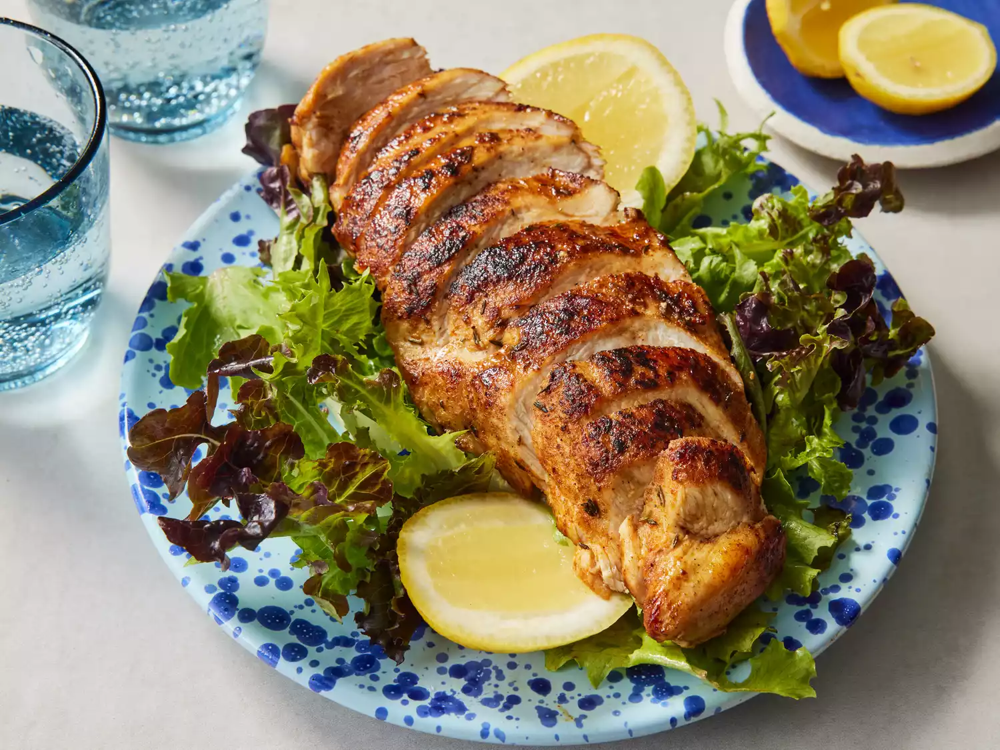

Blackened Chicken

Description
Blackened chicken is quick and easy to make at home. Adjust the spices in this recipe to suit your taste. This is great on a summer's day with fresh corn and mashed potatoes.
Ingredients
- 1/2 teaspoon paprika
- 1/4 teaspoon cayenne pepper
- 1/4 teaspoon ground cumin
- 1/4 teaspoon dried thyme
- 1/8 teaspoon onion powder
- 1/8 teaspoon ground white pepper
- 1/8 teaspoon salt
- 2 skinless, boneless chicken breast halves
- cooking spray
Steps
- Gather all ingredients. Preheat the oven to 350 degrees F (175 degrees C). Spray a baking sheet with cooking spray.
- Heat a cast iron skillet over high heat until it is smoking hot, about 3 to 5 minutes.
- While the skillet is heating, mix paprika, cayenne, cumin, thyme, onion powder, white pepper, and salt together in a small bowl.
- Spray chicken breasts on both sides with cooking spray, then coat evenly with spice mixture.
- Place chicken in the hot pan and cook for 1 minute. Turn, and cook 1 minute on other side. Transfer chicken to the prepared baking sheet.
- Bake in the preheated oven until chicken is no longer pink in the center and the juices run clear, about 5 to 10 minutes. An instant-read thermometer inserted into the center should read at least 165 degrees F (74 degrees C).
- Serve and enjoy!